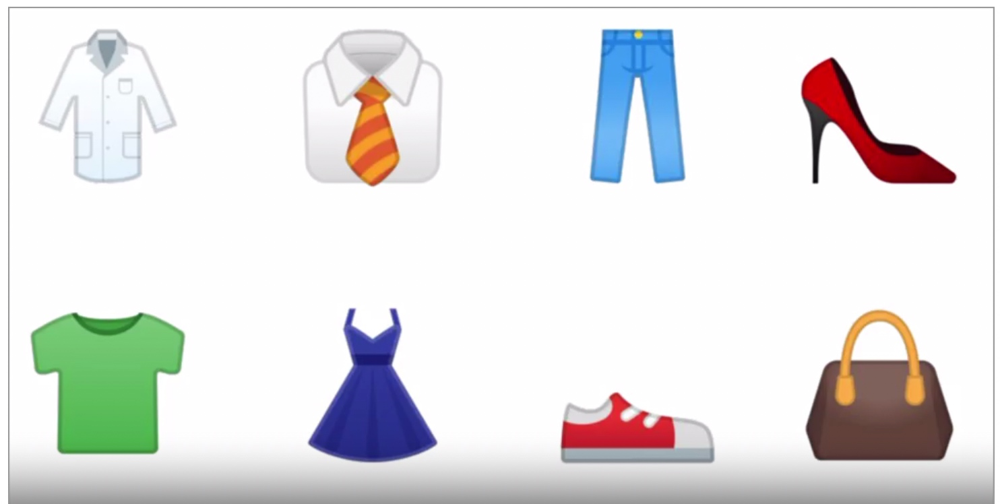

sublime
sublime除了具有基本的文本编辑功能之外，还可以安装很多package来扩展其强大的功能。这里罗列出一些工作中经常能用到的
安装install package
点击菜单中的 “View”–“Show Console”，调出console面板，然后到https://packagecontrol.io/installation#st3官网上的，复制出代码黏贴执行
diff对比
Package Control Messages
Sublimerge 3
Sublimerge 3 (beta) has just been installed. Thanks for trying it out!
It is highly recommended to restart Sublime Text before first use.
!!!!!!!!!!!!!!!!!!!!!!!!!!!!!!!!!!!!!!!!!!!!!!!!!!!!!!!!!!!!!!!!!!!!!!!!!!!!!!!!!!!!!!!!!!!!!!!!!!!!!!!!!!!
!! !!
!! NOTE: THIS IS A BETA VERSION. PLEASE REPORT ANY BUGS YOU MAY ENCOUNTER. !!
!! !!
!! !!
!! http://www.sublimerge.com/support.html support@sublimerge.com !!
!! !!
!! Issue Tracker: https://bitbucket.org/borysforytarz/sublimerge-3/issues?status=new&status=open !!
!! !!
!! !!
!! !!
!! Please visit http://www.sublimerge.com/sm3/docs/ for more information. !!
!! !!
!!!!!!!!!!!!!!!!!!!!!!!!!!!!!!!!!!!!!!!!!!!!!!!!!!!!!!!!!!!!!!!!!!!!!!!!!!!!!!!!!!!!!!!!!!!!!!!!!!!!!!!!!!!
The first steps after installation
==================================
By default Sublimerge's colors theme conforms to default Sublime Text theme. If you are using some
custom theme and find the colors poorly visible, you may need to change them.If you're on Windows and want to use VCS-related commands, you may need to configure the executable
path for your VCS. Linux and OS X users with non-standard VCS installation may need to configure this too.Please visit http://www.sublimerge.com/sm3/docs/configuration.html for more information about configuration.
Simplified usage instructions
In file view:
[ctrl]+[alt]+[d] - display Quick Panel with commands available for current view
In diff view:
Windows/Linux:
[ctrl]+[down] - select next change
[ctrl]+[up] - select previous change- [ctrl]+[left] - copy selected change (or active line) to left from right
[ctrl]+[right] - copy selected change (or active line) to right from left
[ctrl]+[shift]+[left] - copy all changes to left from right
[ctrl]+[shift]+[right] - copy all changes to right from leftOSX:
[alt]+[down] - select next change
[alt]+[up] - select previous change[alt]+[left] - copy selected change (or active line) to left from right
[alt]+[right] - copy selected change (or active line) to right from left
[alt]+[shift]+[left] - copy all changes to left from right
[alt]+[shift]+[right] - copy all changes to right from leftCommon:
[f3] - swap panels
[f4] - show changes navigator
[f5] - recompare buffers- if change is selected the command will copy its whole contents, otherwise will copy only the focused line
In directories diff view:
[down] - select next file/directory
[up] - select previous file/directory
[left] - copy file/directory from right to left
[right] - copy file/directory from left to right
[enter] - enter sub directory / compare text files
[backspace] - enter parent directoryWindows/Linux:
[ctrl]+[down] - select next different file/directory
[ctrl]+[up] - select previous different file/directoryOS X:
[alt]+[down] - select next different file/directory
[alt]+[up] - select previous different file/directoryFor convenience Sublimerge also supports standard OS X keyboard shortcuts for directories navigation:
[cmd]+[down] - enter sub directory / compare text files
[cmd]+[up] - enter parent directoryEnd-User License Agreement (EULA)
LICENSES
SUBLIMERGE is licensed as follows:
a) Evaluation time.
You can evaluate SUBLIMERGE freely for 90 days. Later you will need to purchase
a license for continued use.
b) Installation and Usage.
Licenses are per user and valid for use on all supported operating systems.
License keys may be used on multiple computers and operating systems, provided
the license key holder is the primary user. Businesses must purchase at least
as many licenses as the number of people using SUBLIMERGE.
c) Backup Copies.
You may make copies of the license key and/or SUBLIMERGE for backup and archival
purposes.
d) Evaluation time.
You can evaluate SUBLIMERGE freely for 90 days. Later you will need to purchase
a license for continued use.ILLEGAL USAGE
Any illegal usage of SUBLIMERGE, including reverse engineering, using unauthorized license
keys, creating keygens and cracks is prohibited and will be subject for prosecution.DESCRIPTION OF OTHER RIGHTS AND LIMITATIONS
a) Maintenance of Copyright Notices.
You must not remove or alter any copyright notices on any copy of SUBLIMERGE.b) Distribution.
You may not distribute or sell license keys or SUBLIMERGE to third parties.
Licenses will be revoked if distributed or sold to third parties.c) Rental.
You may not rent, lease, or lend the license key or SUBLIMERGE.COPYRIGHT
All title, including but not limited to copyrights, in and to SUBLIMERGE and any copies
thereof are owned by BORYS FORYTARZ (AUTHOR).REFUND POLICY
Refunds are not available. Because of this, before purchasing a license, you can evaluate
SUBLIMERGE without any functionality limitations for 90 days. Later you will need to
purchase a license.NO WARRANTIES
AUTHOR expressly disclaims any warranty for SUBLIMERGE, which is provided
'as is' without any express or implied warranty of any kind, including but not limited
to any warranties of merchantability, non-infringement, or fitness of a particular
purpose.LIMITATION OF LIABILITY
In no event shall AUTHOR be liable for any damages due to use of SUBLIMERGE,
to the maximum extent permitted by law. This includes without limitation, lost profits,
business interruption, or lost information. In no event will AUTHOR be liable
for loss of data or for indirect, special, incidental, consequential (including lost
profit), or other damages. AUTHOR shall have no liability with respect to the
content of SUBLIMERGE or any part thereof, including but not limited to errors or
omissions contained therein, libel, trademark rights, business interruption, loss of
privacy or the disclosure of confidential information.More information
For more information, troubleshooting, customizing settings and more, please visit www.sublimerge.com
By the way...
Take a break from your work and play my BF's Draughts on your iOS device!
Available on the App Store! :)
参考资料


【Tensorflow】week2 Introduction to Computer Vision
前面说的hello word的例子，输入输出比较简单，这里考虑稍微复杂一点的情况—— 输入数据是图像
人类看到下面的图像之后，能很清楚的分辨出哪个是裤子，哪个是鞋子，那么计算机要怎么分辨呢？

1 fashion-mnist数据集介绍
图像数据集
https://github.com/zalandoresearch/fashion-mnist
这个数据集是MNIST dataset——手写识别数字的的数据集的一个替换集合。数据格式上和手写识别数字的数据一样。
import tensorflow as tf
import numpy as np
from tensorflow import keras
model = tf.keras.Sequential([
keras.layers.Dense(units=1, input_shape=[1])])
model.compile(optimizer='sgd', loss='mean_squared_error')
xs = np.array([1,2,3,4,5,6,7], dtype=float)
ys = np.array([100, 150, 200,250, 300,350, 400], dtype=float)
model.fit(xs, ys, epochs=500)
print(model.predict([7.0]))
Copyright © 2015 Powered by MWeb, Theme used GitHub CSS.